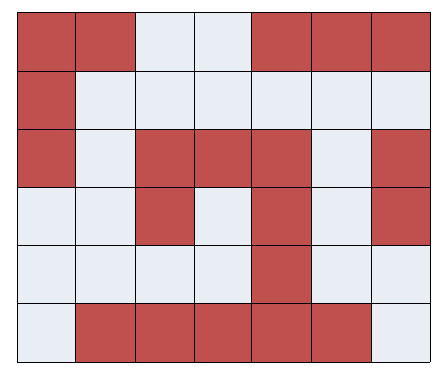
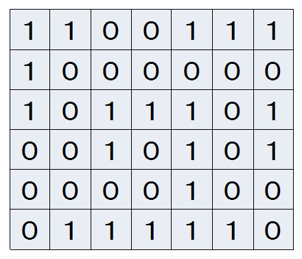
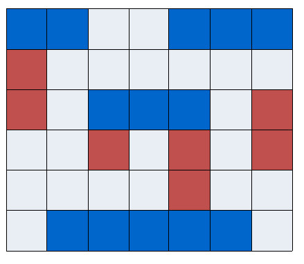
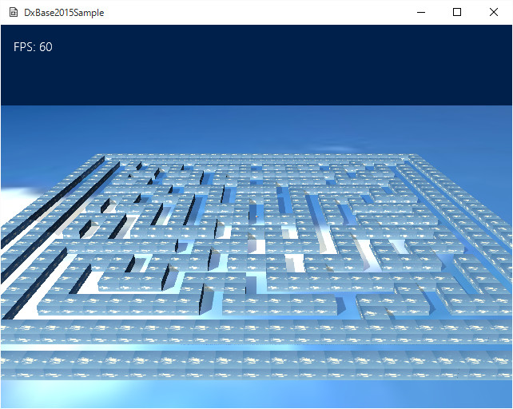

４０４．プリミティブ頂点の変更と最適化
この項では、
最適化について考えます。ステージ上に配置されるオブジェクトがどんどん増えていった場合、どうしても描画速度に影響してきます。
配置される大量のオブジェクトが、全く別のクラス（タイプ）のオブジェクトであれば仕方がないですが、そういうことはめったになく、たいがいは同じタイプのオブジェクトが大量に配置する必要に迫られます。
最適化が必要なわけ
たとえばステージを作成する場合、ステージ上に
マップといわれるいくつかのブロックにわけたデータを用意する場合があります。以下のようなイメージです。

図4004a
これを、以下のように
0、1といった数字で表現します。以下のようになります。

図4004b
これを３Ｄで表現するとして、マップを上から見たデータとすると、真っ先に思いつくのが、
1に対応する場所に立方体を配置するというものです。
たしかに、
大は小を兼ねるではないですが、小さな立方体を
たてよこ（あるいは高さ）に伸ばせば直方体ができますので、この方法も一理あります。しかし、そのようにして作成した立方体の数を数えてみましょう。2次元のマップでたとえば、
30×30のサイズがあった場合、最高で900の立方体が必要です。
もちろん、
0の部分もあるので、半分が立方体としても450必要です。これで、
高さが、たとえば10あったらどうでしょう？
1000個以上にすぐになってしまいます。
この負荷はすぐにゲームに影響します。システムのスピードにもよりますが、標準的なWindows8.1マシンで、300個を超えたあたりから、動きが怪しくなります。
形状の最適化
まず考え付く最適化は立方体をいくつかまとめて直方体にする方法です。以下のように最適化します。

図4004c
こうすることで、
今まで20個あった立方体が、8個の直方体に減らすことができます。手法としては。
まず横方向に2マス以上あった場合は横方向に限界まで伸ばし、続いて残ったマスを縦方向に伸ばすという手法でこのように最適化できます。
このようにして
小さなオブジェクトをまとめて大きなオブジェクトにするという最適化は、かなり有効です。
描画の最適化
上記の最適化で形状はある程度まとめられますが、それでも、
DxBase2015フレームワークの場合、各直方体は1個1個が別々のオブジェクトなので、描画は直方体の数だけ行われます。
DirectX11への設定と設定を元に戻す処理が直方体の数だけ行われるので、それはそれで無駄な処理が入ります。
そのため、描画の最適化の方法として、直方体1つ1つを描画するのをやめて、全体で1個のオブジェクトとして描画します。しかし、描画以外の処理（Update処理）は、直方体の状態で行います。
この処理をすることで、衝突判定等はOBBの状態で行い、描画のみ全体で1回という最適化を行うことができます。
サンプル説明
Sample404のソリューションを開いてリビルド、実行すると以下の画面が現れます。

図4004d
このように全体的に
迷路が配置されています。
この迷路は、動的に作成されたもので、有名な迷路アルゴリズムを利用しています。
GameStage.h、cppの
Labyrinthクラスが
迷路クラスです。コンストラクタに、
幅と奥行きのマップ数（6以上の偶数）を渡すと、その数のマップの迷路を作成します。これで作成された迷路は、
壁の部分が1、そうでない部分が0になります。上記で説明したマップのフォーマットと同じです。サンプルでは30×30のマップを作成しています。
この動的に作成した迷路マップを読み込んで、
FixedBoxクラスを作成します。このクラスは
チュートリアル008などのFixedBoxクラスとほぼ同じです。
Charactor.h。cppに記述があります。
違う部分は、
Create()関数で、SetDrawActive(false)と設定している部分です。これにより、
FixedBoxクラスがそれぞれ描画することはなくなります。
迷路の読み込みと、FixedBoxの作成
迷路の読み込みとFixedBoxの作成は
GameStage.cppのGameStage::CreateFixedBox()関数に記述があります。
void GameStage::CreateFixedBox(){
//マネージャから参照できるようにグループを作成
CreateSharedObjectGroup(L"FIXED_BOX");
//迷路の作成
Labyrinth labyrinth(m_MapSizeX, m_MapSizeZ);
//迷路マップの取得
auto& LabMap = labyrinth.GetMap();
//横軸
vector< vector<int> > DataMap;
ChangeVecXZ(LabMap, DataMap);
//一番外の壁に接している通路を作成
for (size_t i = 1; i < DataMap.size() - 1; i++){
auto line = DataMap[i];
for (size_t j = 1; j < line.size() - 1; j++){
if (i == 1 || i == (DataMap.size() - 2)){
DataMap[i][j] = 0;
}
if (j == 1 || j == (line.size() - 2)){
DataMap[i][j] = 0;
}
}
}
//横軸のセット
SetFixedBox(DataMap, true);
//縦軸
vector< vector<int> > DataMap2;
ChangeVecXZ(DataMap, DataMap2);
//縦軸のセット
SetFixedBox(DataMap2, false);
//ボックス描画マネージャの作成
AddGameObject<FixedBoxManager>();
}
赤くなっているところは、迷路マップを取り出すところと、横軸、縦軸のFixedBoxを作成しているところです。詳細は各関数を参照ください。
最後の行の、
//ボックス描画マネージャの作成
AddGameObject<FixedBoxManager>();
は、
すべてのFixedBoxをまとめて1つのオブジェクトとして描画するクラスです。
これも
Charactor.h、cppに記述があります。
その
FixedBoxManager::Create()関数で、
各FixedBoxのワールド行列から、頂点を作成しています。つまり、ワールド行列の値と同じ頂点の集合になります。またここで、テクスチャのUV値もタイリングするようにします。
それで、一度に描画します。この際、
FixedBoxManagerのワールド変換は、アイデンティティ（つまり変換なし）になることに注意してください。
つまり
原点を中心とした座標にすべてのFixedBoxをまとめているのです。
今回は、FixedBoxクラスは透明になっていませんが、透明を使う場合は注意が必要です。このままでは描画順は原点の位置でカメラからの距離で見ます。ですので、透明にする場合は、
描画レイヤーを変更するなどして、描画順を制御する必要があります。
このようにして最適化すると、しない場合に比べてかなり動作速度が変わります。今回のマップは30×30ですが、これを立方体で表現すると、間違いなく処理落ちが起こります。
最適化にはいろんな方法があります。この方法をとれるのは、
壁（立方体）が厚さが1個の場合でかつ、高さが1固定、の場合で、縦横高さに自由に伸ばせる場合はこの手法は使えません。
また、ステージの初期時に位置を決定してしまうので、動くマップの場合は、別の最適化が必要です。
また、たとえば、
オセロの盤のようなマップの場合は、この方法ではあまり意味がありません（描画側は意味があるかもしれませんが）。このような場合は
チュートリアル008のような
反発する壁を縦横に並べた方が動作速度は速いでしょう。
また、たとえばカメラから見てある一定上先のオブジェクトは描画しない、という最適化もあります。射影行列の
Far位置で調整することも可能ですし、遠くは描画しない代わりに、ぼんやりしたエフェクトを描画する手法もあるでしょう。もちろん、遠くのものは頂点数を減らす、などの最適化もあるでしょう。
いずれにせよユーザーに満足してもらうには、
軽快な操作感は非常に重要です。どんなに素晴らしいグラフィックでも、
操作感に影響を与えては、元も子もありません。
それぞれのゲームにあった最適化を常に頭に置きながら制作を進めていってもらいたいものです。